其他
免费做 3D VTuber：样本、格子裙贴图和 VSeeFace
窗口标题是 VRoid Studio 2.1.3 - model.vroid*。首页那一屏没有版本号。界面是英文。这一条不是从零捏，是样本模型换头发和身高，再把 BOOTH 上的免费格子裙贴图导进长外套模板。口播里有、画面上没有的步骤单独标出来。滑杆刻度只写这一帧能读清的。
从样本里点 AvatarSample_Y
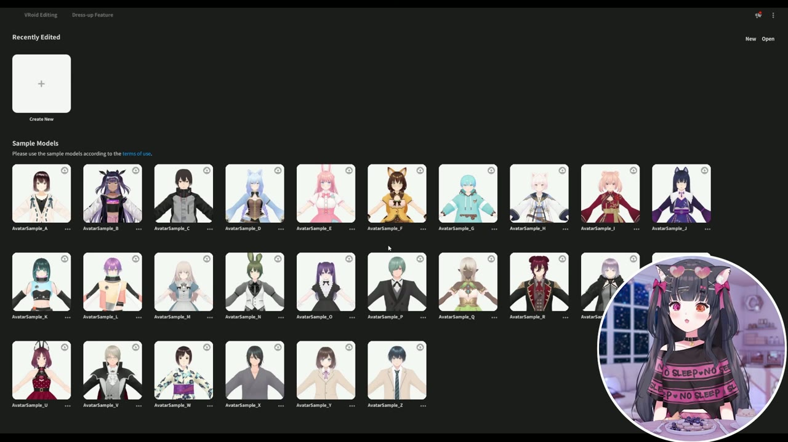
口播说软件可以从官网或 Steam 下，简介里给了 vroid.com 的 Studio 页；这一段没有安装画面。也可以从零做，她选的是样本。格子最下一排中间那件米色西装、粉领结的是 AvatarSample_Y，鼠标就停在它旁边。点开之后先落到 Face 的 Face Sets，脸上还是短发和浅色眼睛，这一页没有改五官。
前发改齐刘海，后发改长发
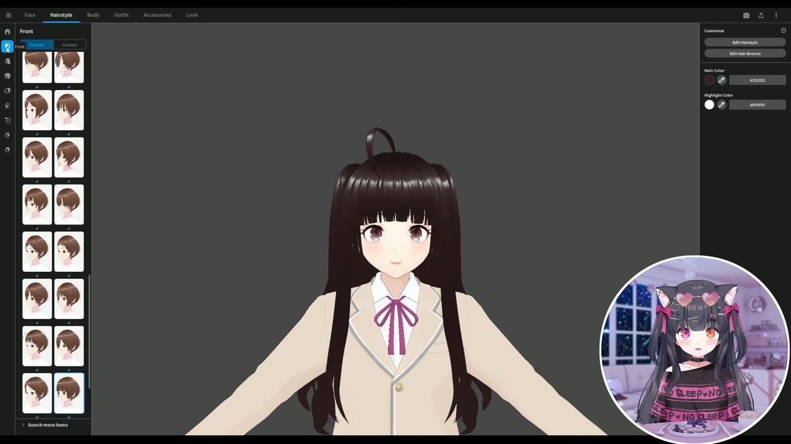
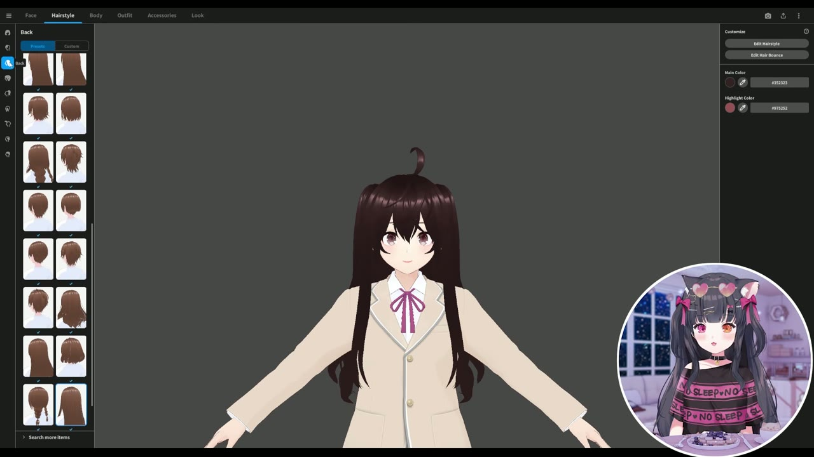
从短波波头换成深色长发：Front 里点出齐刘海和两侧长发，头顶留下一缕弯呆毛。Back 里后发预设是辫子和直发那一列，身上仍是长双马尾。右侧主色是深棕，高光是偏粉的棕，这一段没有改色值。口播说刘海、侧发、后发都能单独抠，侧发那一页画面没停住。也口播说别的耳朵可以用头发做，这里没有打开耳朵。
打开编辑骨骼，刘海按组分色
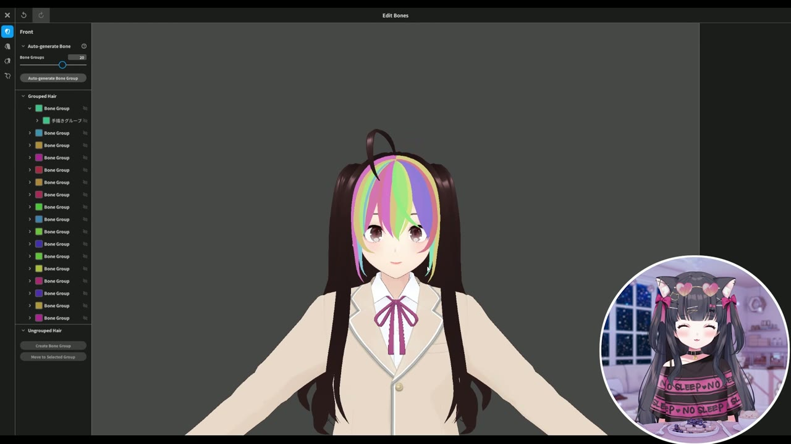
进 Edit Bones 之后，刘海不再是一整块深棕，而是按骨骼组分色，用来看出每一组盖在哪。呆毛还在头顶。再过两秒选中的是 Ahoge 里的 Hair 1，呆毛上套着一串白色骨骼。口播问要不要另做一期用头发做耳朵，这一页没有做。
身高拉到 180.7cm
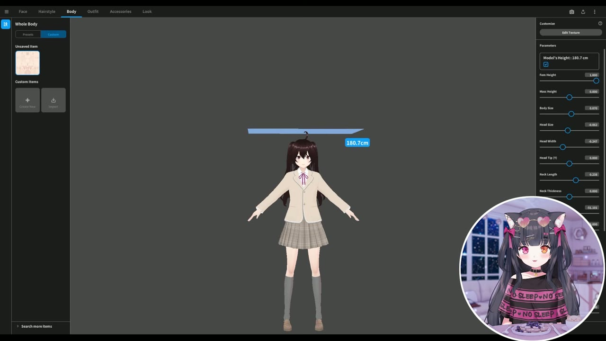
这一张之前人更矮，保存下来的图里没有那一帧的身高读数。这一镜头顶蓝标是 180.7cm，蓝线抬到头上，腿和裙子跟着变长。Fem Height 勾着，读数 1.000，圆点在最右。Masc Height 0.000，Body Size 0.070，Head Size -0.062，Head Width -0.147，Head Tip (Y) 0.000，Neck Length 0.238，Neck Thickness 0.000。再往下的滑杆被右下角的圆框挡住，不记。
从侧栏进 BOOTH
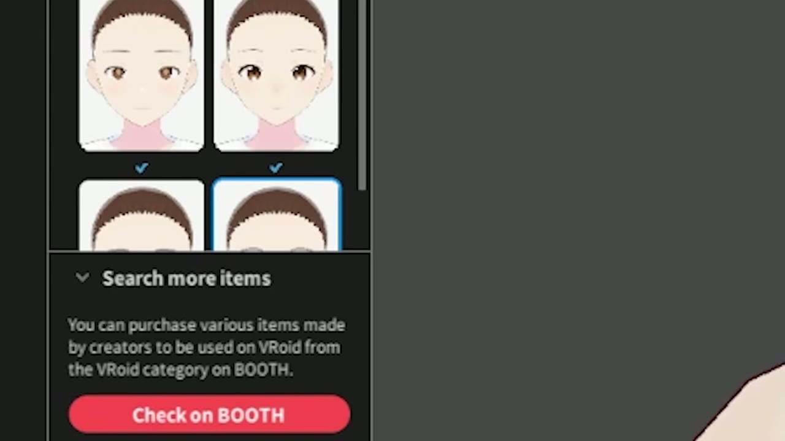
口播说预设能在 BOOTH 上买，点这里会带上日文关键词打开网站。按钮就在任意一组预设列表的底部，脸、头发、衣服都有。不必每件都付钱。
打开免费的格子裙套装
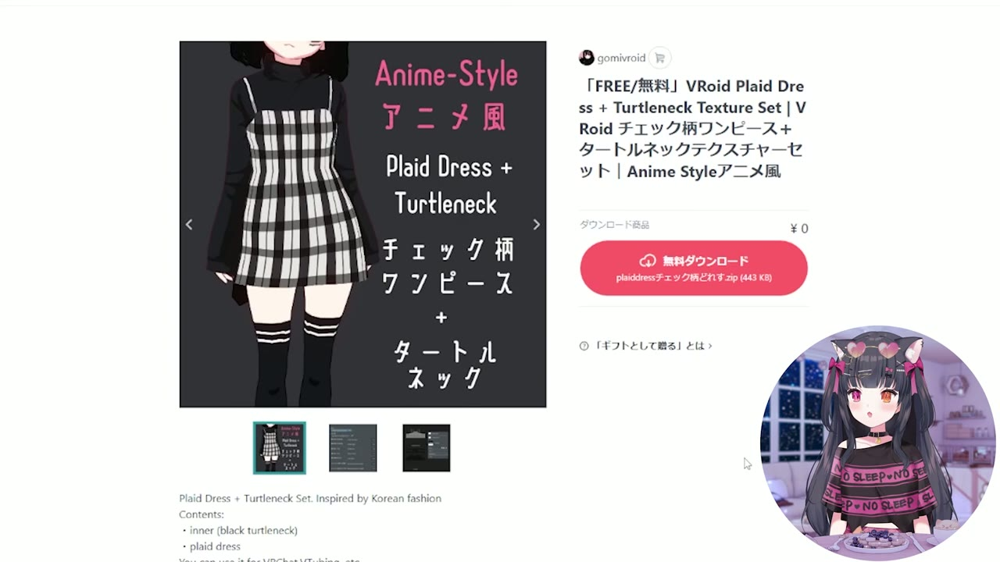
口播说点页面顶部的标签可以只看免费预设。画面上有一条大红箭头指着 BOOTH 上沿，标签本身被箭头挡住了。接着打开的就是这件 ¥0 的格子连衣裙加高领。简介里的商品页是 booth.pm/ja/items/2688149，和这一屏是同一件。封面说明里能看到 inner（黑色高领）和 plaid dress。口播感谢做免费预设的人，然后说如果不想要默认的 VRoid 样子，就去改纹理。
在长外套模板里开纹理编辑器
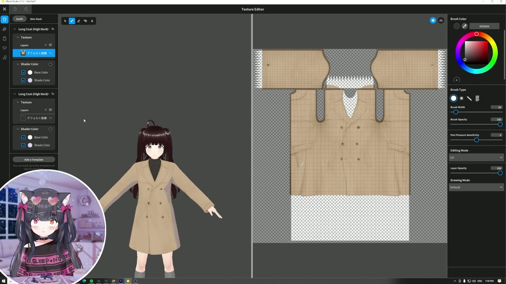
衣服先在 Outfit 的 Tops 里换成一件米色长大衣，右侧是 Volume、Shoulder、Sleeve 那一组版型，这一段没有拖它们。再点 Edit Texture。口播说下载说明里写的是 long coat 模板，但列表里看不出哪一件叫这个名字，得点开预设再看文件名。她后来又点过一件青色连帽衫，参数换成下摆、袖口和 Hood 那一组，那件不是最后留下的衣服。两段同名的 Long Coat (High Neck) 叠在列表里，上一段的默认图层就是这件大衣。再往下还有 Add a Template，这一镜没有点。
把 blackplaidress 导进默认图层
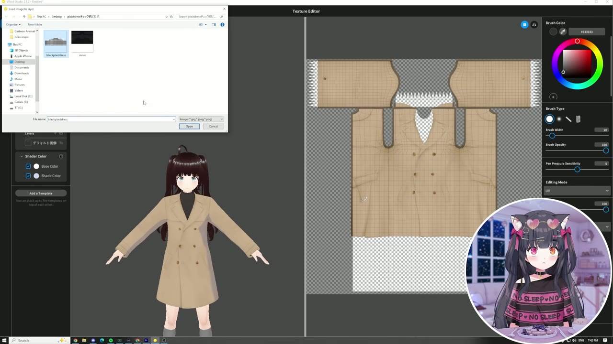
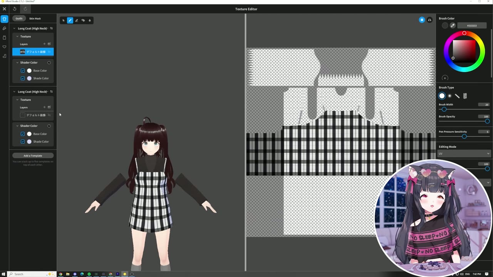
在「デフォルト画像」上右键，菜单里能看到 Toggle Visibility、Toggle Alpha Lock、Duplicate、Import、Export、Export Guide、Rename、Move Up、Move Down，蓝底停在 Import。选 blackplaidress 后，米色大衣换成黑袖高领加格子短裙。另一段同名衣服下面还有 Layer 1，点它时 UV 是黑色高领的形状，人身上的格子裙还在。口播说也可以把贴图拿到 Photoshop 或 Clip Studio 里画，她要全程留在免费软件里，所以直接在这里画。
把穿出来的一块擦成透明
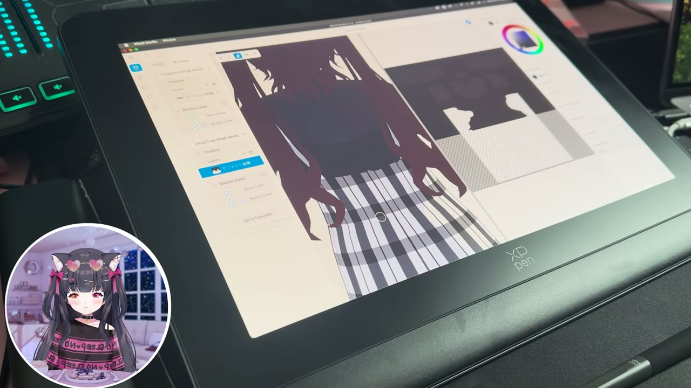
口播说衣服有一点穿模，要把那一块擦掉；用鼠标也能擦，她这次是在赞助的 XPPen Artist Pro 14 (Gen 2) 上画。拆箱那几分钟没有 VRoid 操作。擦之前，背面 UV 右侧已经缺了一块，露出透明格子。这一镜缩到腰上，圆笔沿着裙腰擦，擦过的地方不再是大衣的布，而是透出去。图层菜单里后来也能看到 Delete，她这一下是在画布上擦，不是删整层。
右眼改成品红，左眼留着琥珀
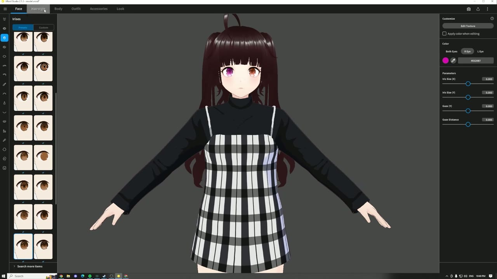
样本原来是浅色双眼。这一帧只改了 R Eye，读数 #E620B7，对应画面左边那只品红眼睛。画面右边那只是琥珀色，L Eye 没有点开，所以没有第二只的色值。Iris Size (X) 的圆点在中间，读数 0.000，没有把虹膜放大。口播说旧视频里那个要花钱的口型工具这次不用，改靠后面的摄像头。
填 VRM 信息再导出
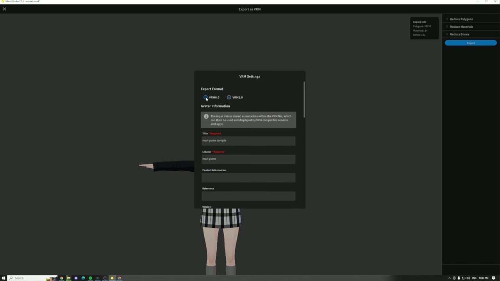
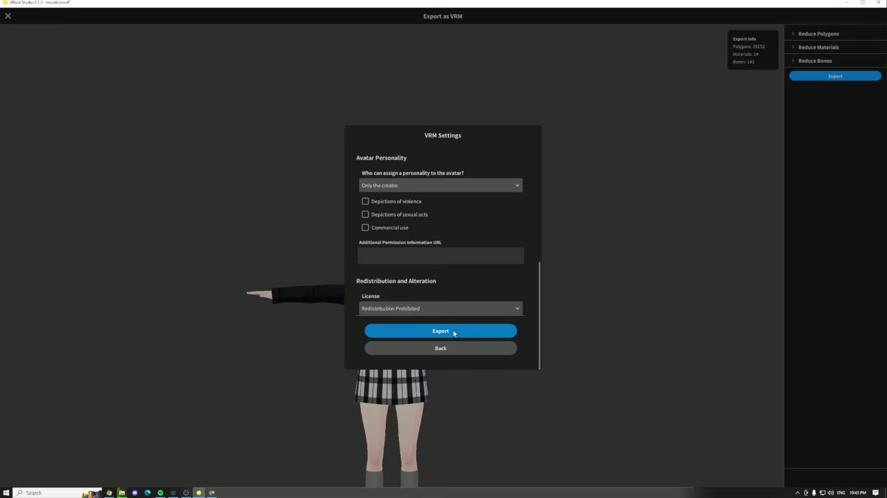
右侧栏还有 Reduce Polygons、Reduce Materials、Reduce Bones 和一颗 Export，她走的是中间这个对话框。Contact Information 和 Reference 是空的。翻到第二页后，鼠标点在蓝色 Export 上。存文件的窗口被切走了，下一镜已经是下载页。口播说导出之后丢进追踪软件，再进 OBS。
放进 VSeeFace，勾上 Spout2
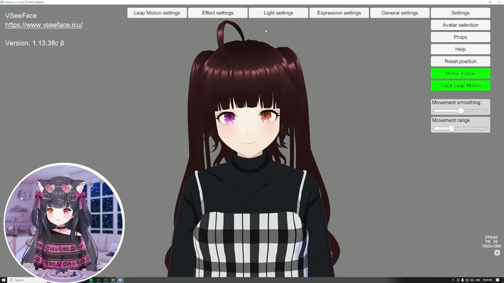
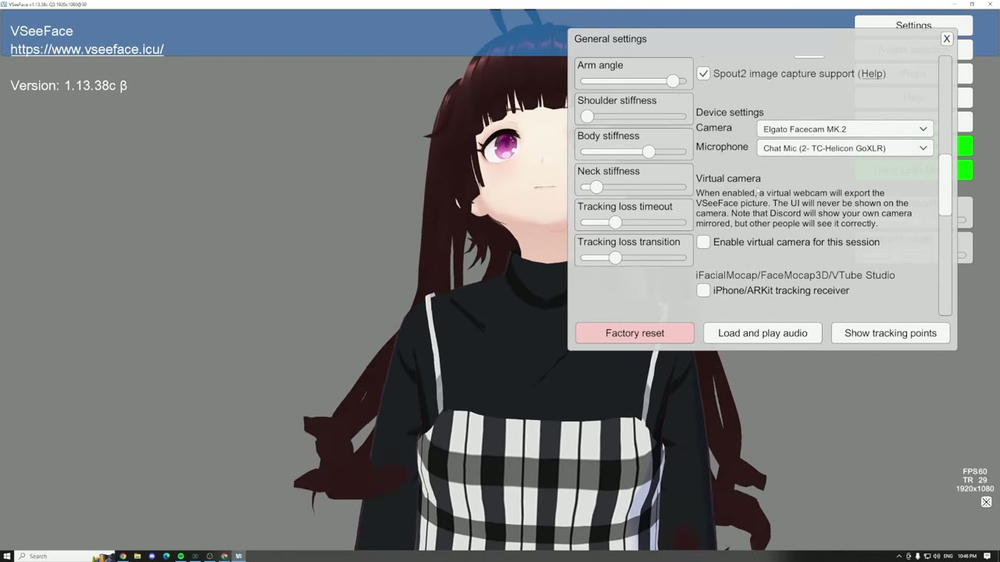
口播说用 VSeeFace，因为免费、适合新手，具体功能留到以后。下载页按钮写着 Download v1.13.38c，和窗口版本一致。启动器里有 Local avatars、一张样本缩略图和 Add avatar；把 VRM 拖进去的那一下没拍到，下一镜模型已经在灰底上。摄像头追踪就是这里的 Camera。Spout2 要先勾上，口播说插件链接在简介，仓库是 github.com/Off-World-Live/obs-spout2-plugin。她说这样捕获是透明的，不用游戏画面再抠像。
在 OBS 里加源，人叠到房间上
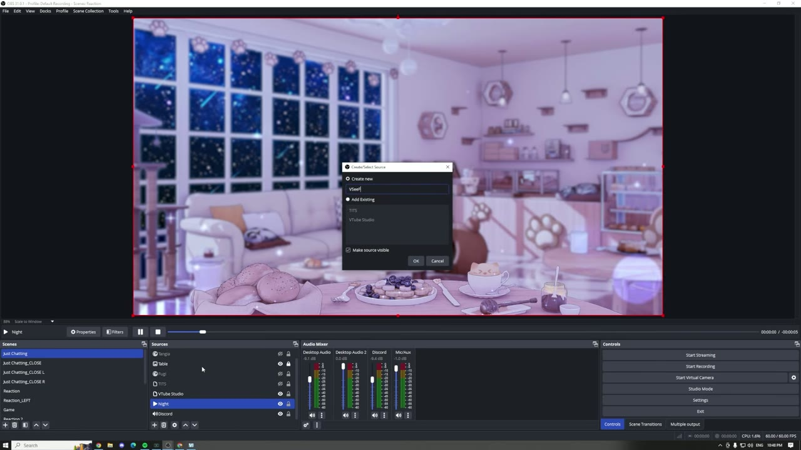
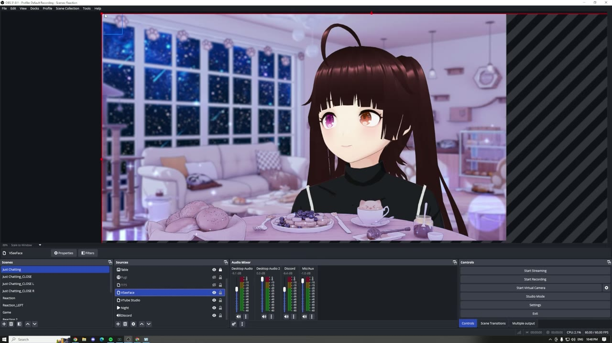
口播说先新建场景，源的类型选 Spout，再选 VSeeFace，并按默认值做透明。画面上新建源的名字从输入框里的 VSeeF 变成列表里的 VSeeFace，没有去用已有的 TITS 或 VTube Studio。属性窗口标题是 Properties for 'VSeeFace'，下拉里能看到 Use first available sender，蓝底停在 VSeeFace，Poll time for new senders 是 fast。确定之后灰底消失，人和桌子、窗户叠在一起。口播说预设都准备好的话，十几分钟就能开始直播；从零做一整套的教程她没有在这条里做。